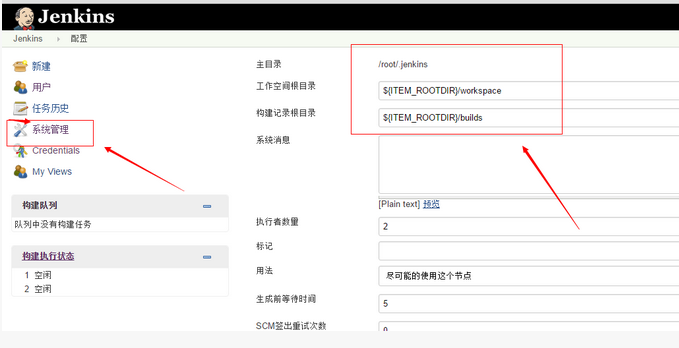

Jenkins持续集成服务器配置Linux(Ubuntu)¶
持续集成使用阶段主要步骤¶
- 程序员从源代码仓库下载最新程序
- 程序员编写代码、测试用例，并提交更新结果给版本控制仓库
- CI服务器根据触发条件，从版本控制仓库提取最新代码，交给构建工具的工作空间
- 构建工具对代码进行编译、测试，并进行打包。如有必要，实现产品部署、发布
- 通过构建工具与版本控制工具的配合，实现产品版本控制与管理
- 建立、管理项目开发的工作网站
1 安装JDK¶
sudo apt-get install openjdk-8-jdk
java -version #查看是否安装java
java version "1.8.0_91"
Java(TM) SE Runtime Environment (build 1.8.0_91-b14)
Java HotSpot(TM) 64-Bit Server VM (build 25.91-b14, mixed mode)
2 安装Jenkins¶
apt-get安装方式
#添加Jenkins安装key
wget -q -O - http://pkg.jenkins-ci.org/debian/jenkins-ci.org.key | sudo apt-key add -
#添加Jenkins安装源列表
sudo sh -c 'echo deb http://pkg.jenkins-ci.org/debian binary/ > /etc/apt/sources.list.d/jenkins.list'
sudo apt-get update
sudo apt-get install jenkins
#直接把Jenkins当成服务安装，完成后访问：http://localhost:8080验证是否安装成功；
3 Jenkins默认安装位置¶
安装目录：/var/lib/jenkins
日志目录：/var/log/jenkins/jenkins.log
4 Jenkins服务启动、停止方法¶
sudo /etc/init.d/jenkins start
sudo /etc/init.d/jenkins stop
5 访问Jenkins：¶
http://192.168.0.212:8080/

6 安装Jenkins plugins：¶
在线安装：
6.1 进入系统管理¶

6.2 选择插件管理¶

6.3 切换到可选插件¶

6.4 选择插件直接安装¶
7 账号安全配置¶
7.1 配置全局安全认证¶
7.2 选择Jenkins专用用户数据库，允许用户注册¶

7.3 注册用户¶

7.4 启动安全矩阵，添加用户、权限¶
8 环境变量设置¶
环境变量列表:
BUILD_NUMBER， 唯一标识一次build，例如23
BUILD_ID，基本上等同于BUILD_NUMBER，但是是字符串，例如2011-11-15_16-06-21&&据说新版本只有一个ID，具体大家自己尝试下；
JOB_NAME， job的名字，例如JavaHelloWorld；
BUILD_TAG，作用同BUILD_ID,BUILD_NUMBER,用来全局地唯一标识一此build，例如jenkins-JavaHelloWorld-23；
EXECUTOR_NUMBER， 例如0；
NODE_NAME，slave的名字，例如MyServer01；
NODE_LABELS，slave的label，标识slave的用处，例如JavaHelloWorldMyServer01；
JAVA_HOME， java的home目录，例如C:\Program Files (x86)\Java\jdk1.7.0_01；
WORKSPACE，job的当前工作目录，例如c:\jenkins\workspace\JavaHelloWorld；
HUDSON_URL = JENKINS_URL， jenkins的url，例如http://localhost:8000/；
BUILD_URL，build的url 例如http://localhost:8000/job/JavaHelloWorld/23/；
JOB_URL， job的url，例如http://localhost:8000/job/JavaHelloWorld/；
SVN_REVISION，svn 的revison， 例如4；

9 Jenkins使用¶
9.1 创建项目¶
输入项目名称，选择项目类型 项目描述
9.2 项目构建¶
 查看构建结果
查看构建结果
 构建结果显示
构建结果显示